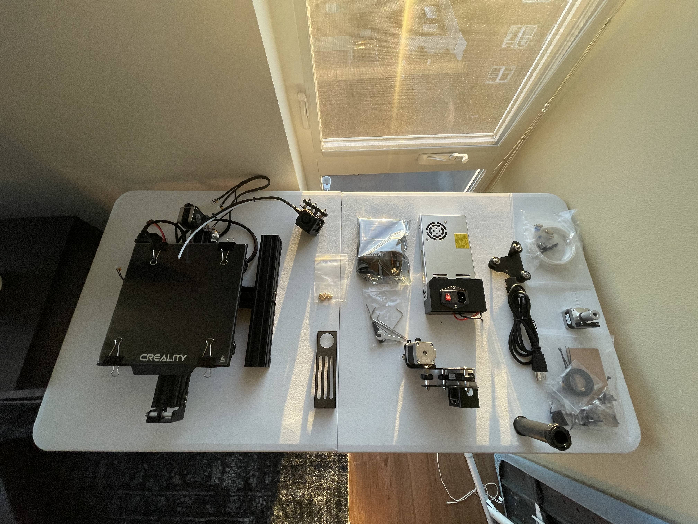
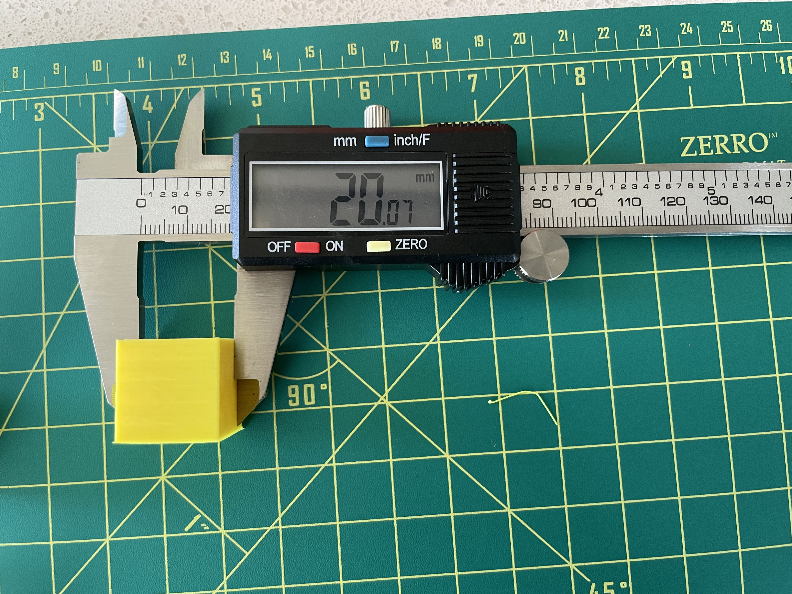
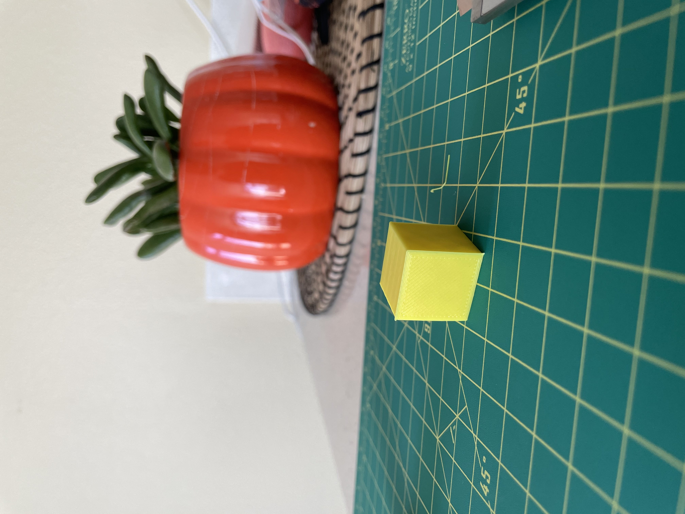
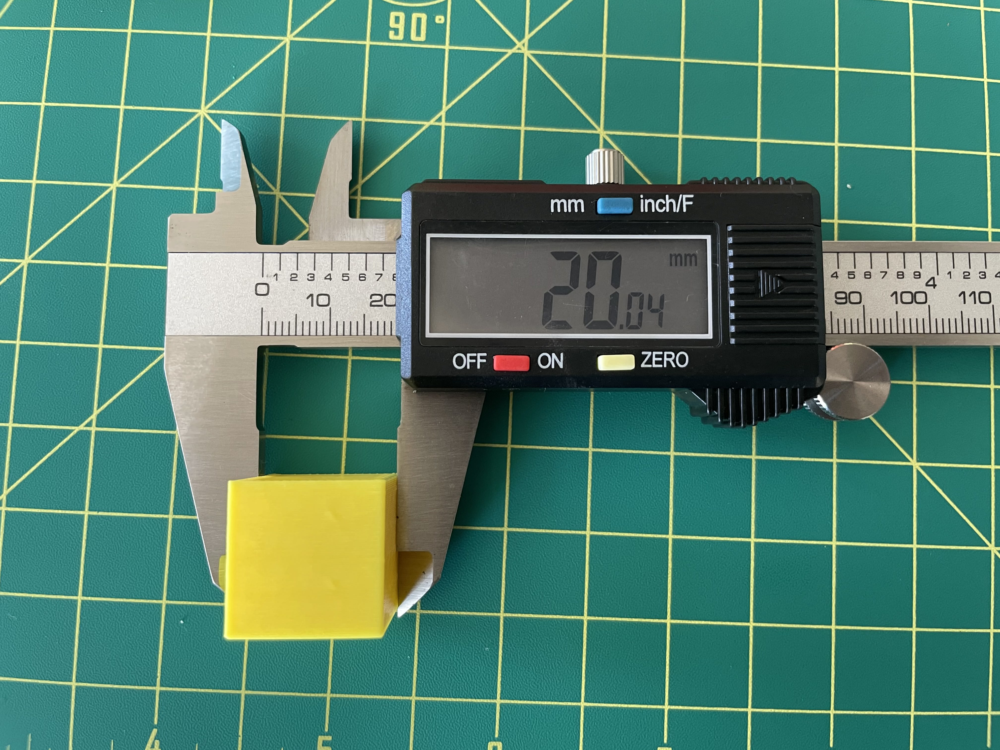
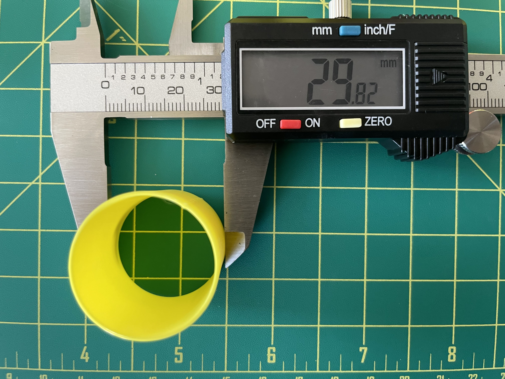
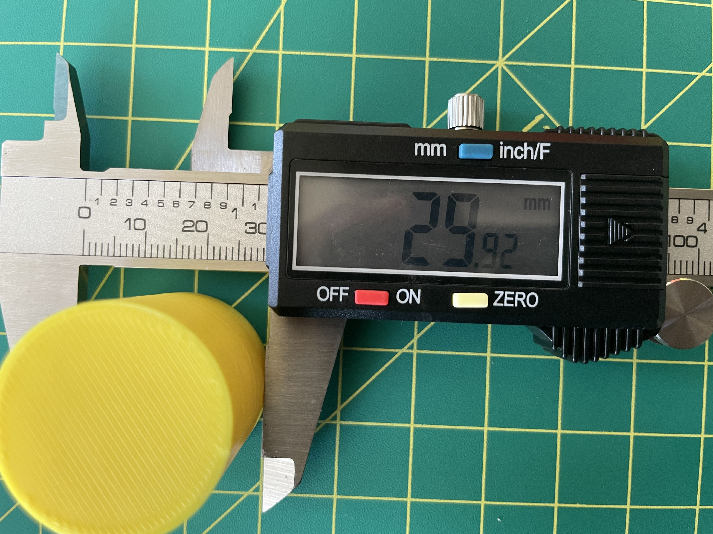
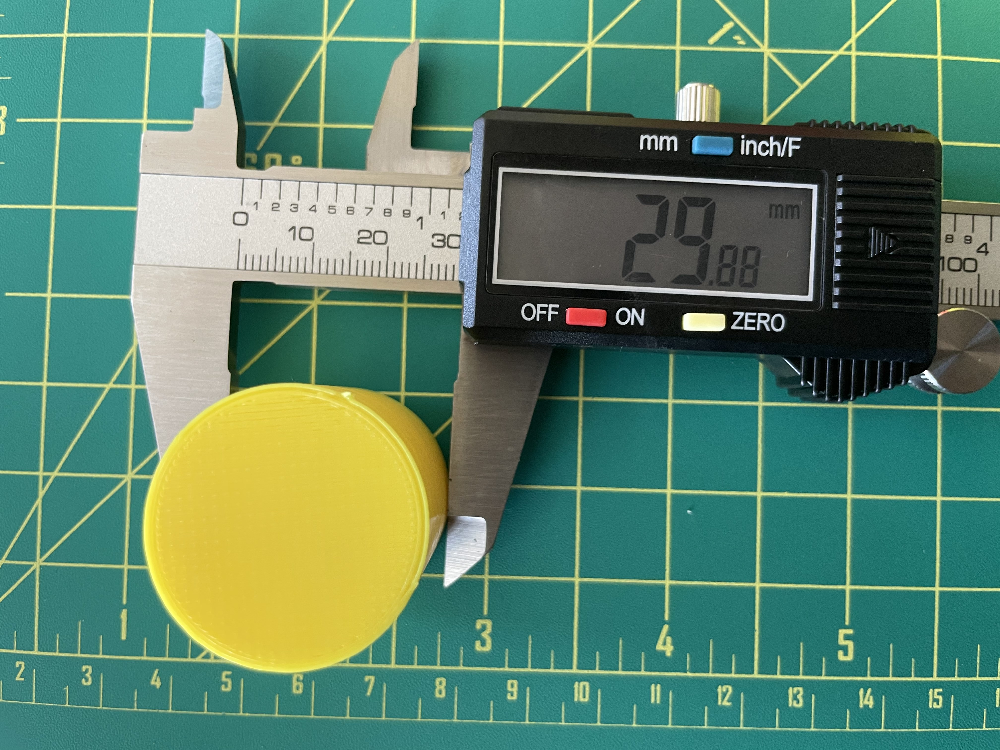
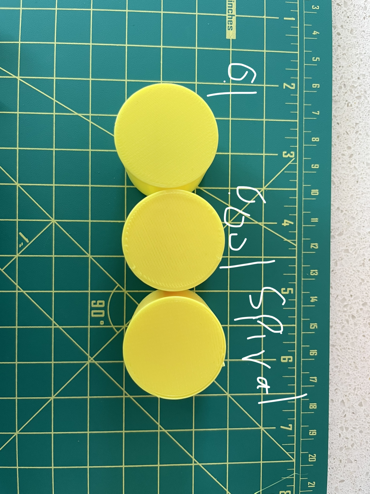
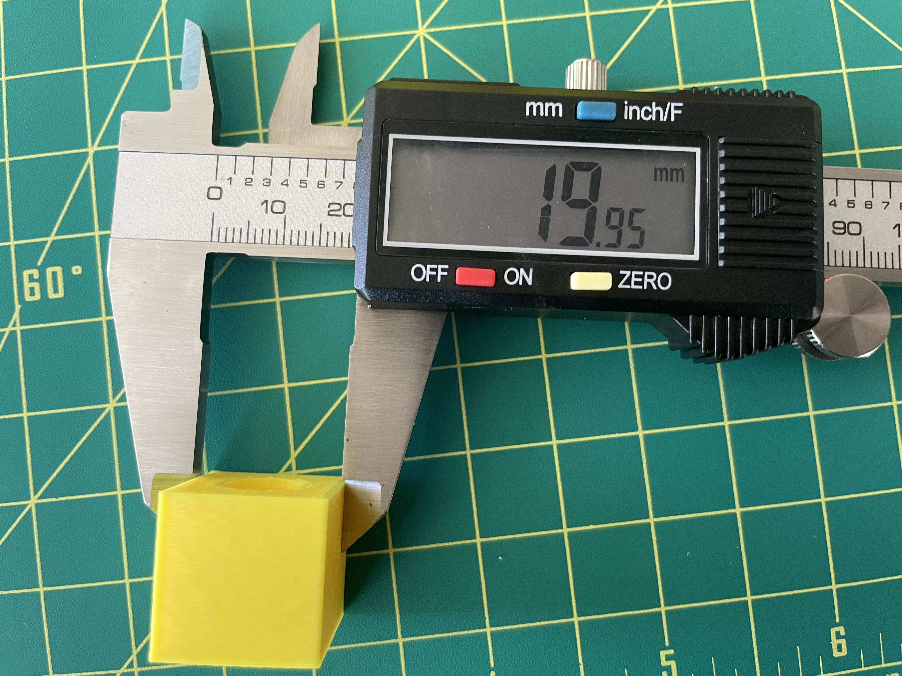
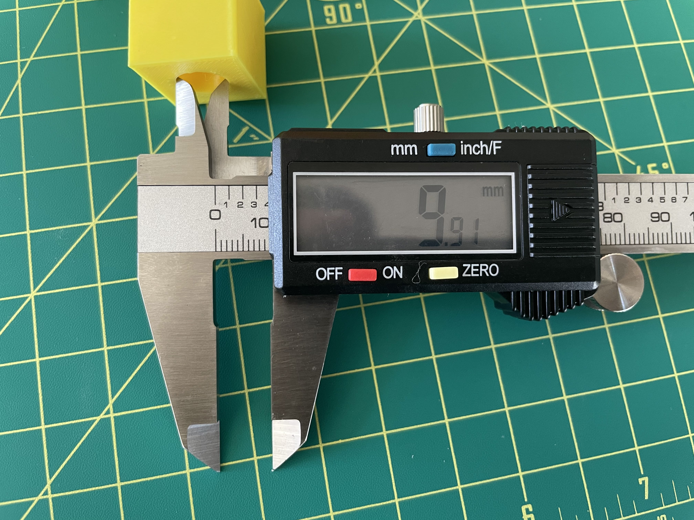

Naser Alqseer's Assignment 2: Getting started with 3D printing!
In this assignment I assembled my Creality Ender-3 Pro printer and printed some 3D models to test the accuracy of the printer and my calibration of the printer. For the assembly process I followed this video to assmeble the printer and then used this video to level the bed properly. Reflecting on the assembly process, leveling the bed was by the most tedious step and I had to try multiple test prints to see if my bed was properly leveled or not and adjust. this process was annoying because of the horrible positioning of the knobs at the bottom of the bed. anyways, I needed to get this out of my system back to the assignment!

After the assembly was complete the first part of this assignment was to print a 2 cm cube at 3 different settings "low", "standard", and "Super". the main difference here other than the quality was the time it took to print the cube. the cubes took 21, 26 and 51(!!!) minutes respectively. surprisingly they were all fairly accurate as they were around 20 +- 0.1 mm. Sidenote: I am using a misprint for the low quality version because I think genereated a pretty cool shape at the end of the print where the g code got messed up, it still has the correct dimensions otherwise!



cube .3dm "low" cube .gcode "standard" cube .gcode "super" cube .gcode
because the quality from my 3 prints was pretty similar across the board I went with the standard quality for concentric top and bottom cube because it was a good while still being relatively quick. this is going to help me check the tolerance on the cube.

because the quality from my 3 prints was pretty similar across the board I went with the standard quality for concentric top and bottom cube because it was a good while still being relatively quick. this is going to help me check the tolerance on the cube.
for the next part of the assignmnet we are tasked with printing 6 different things (2 tubes and 4 cylinders) with different settings in cura and the tolerancing
for the next part of the assignmnet we are tasked with printing 6 different things (2 tubes and 4 cylinders) with different settings in cura and the tolerancing




single extrusion wall .3dm single extrusion wall .gcode double extrusion wall .3dm double extrusion wall.gcode cylinder .3dm high tolerance.gcode cylinder sprial.gcode cylinder on its side with supports.gcode low tolerance .gcode
The last part of the assignment is making a cube with 20 +-0.1 mms with a hole of 10 +-0.1 mm going through it.

